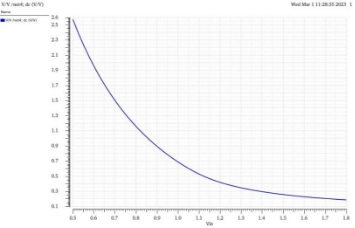
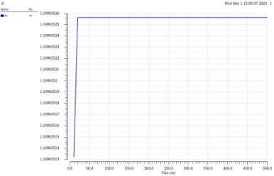
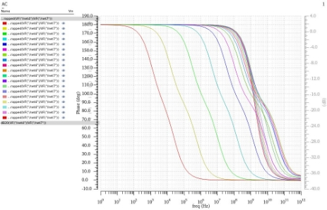
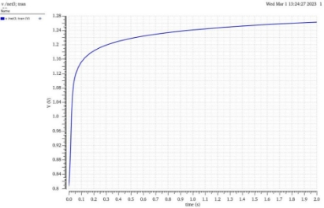
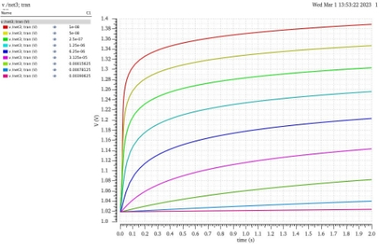
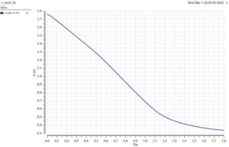
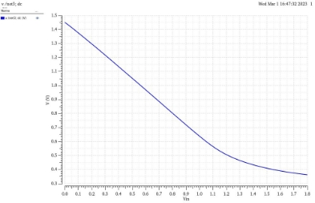

【模集】共源级MOS放大电路增益、负载的讨论分析
目录
1.3采用二极管连接的NMOS/PMOS做负载的共源级MOS的区别 4
2.3探究NMOS/PMOS做负载的共源级MOS区别的仿真电路 5
3.3探究NMOS/PMOS做负载的共源级MOS的区别 10

如图所示的采用二极管连接的PMOS做负载的共源级结构，当M1管刚开启的时候，M1和M2都位于饱和区，分析此时的增益表达式，可知ID1=|ID2|.
可以列出等式 1/2μnCox(W/L)1(VGS1−VTH1)^2=1/2μpCox(W/L)2(VGS2−VTH2)^2，又因为AV=−μn(W/L)1/μp(W/L)2，可以得出AV=|VGS2−VTH2|/(VGS1−VTH1).
此外，用另外一种方法也可以推出AV的表达式，AV=gm1/gm2=μn(W/L)1(VGS1−VTH1)/μp(W/L)2|VGS2−VTH2|. 可以发现，第一个表达式中AV与VGS2成正相关，与VGS1呈负相关，但是第二个表达式恰好相反，请解释构成这一对矛盾的原因。

如图所示的NMOS电路中，将NMOS源端电压记作VS，当电流源I1跳变到0时，VS基本只能上升到VDD−VTH2，不会达到VDD. 请解释这一现象。
1.3采用二极管连接的NMOS/PMOS做负载的共源级MOS的区别


如图所示，探讨采用二极管连接的NMOS/PMOS做负载共源级MOS区别。


2.3探究NMOS/PMOS做负载的共源级MOS区别的仿真电路

其中PMOS做负载的共源级MOS的仿真电路如图所示，对二者进行分析。
表1 MOS晶体管的模型参数
| 参数 | PMOS | NMOS |
|---|---|---|
| W(um) | 20 | 5 |
| L(um) | 1 | 1 |
| Multiplier | 1 | 1 |
| Fingers | 1 | 1 |
表1为仿真时PMOS和NMOS晶体管的模型参数，MOS管的阈值电压在上述的图像中已经标出，因此表1中没有涉及。
构成AV不同的主要原因在于AV=|VGS2−VTH2|/(VGS1−VTH1) 的条件是基于直流工作点的推导，而AV=gm1gm2=μn(W/L)1(VGS1−VTH1)/μp(W/L)2|VGS2−VTH2|的条件是基于交流小信号的推导，两者的推导条件有本质上的区别，因此产生了表面上表达式的一组矛盾。从推导过程中也可以看出，AV=|VGS2−VTH2|/(VGS1−VTH1)的推导前提是ID1=|ID2|，也就是说此时运算得到的AV是针对某一个特定的VGS2和VGS1得到的增益。而AV=gm1gm2=μn(W/L)1(VGS1−VTH1)/μp(W/L)2|VGS2−VTH2|推导中利用的跨导是在交流小信号模型中得出的，此时的VGS2，VGS1是一个幅值较小的正弦信号，两者的推导过程存在本质区别。
对图中采取的电路进行DC扫描分析，为避免MOS管进入亚阈值区域，输入信号的变化范围是0.5~1.8V，观察在直流工作点下的增益变化。

从图中可以看出，随着Vin增加，也就是VGS1增加，增益AV下降，这也符合AV=|VGS2−VTH2|/(VGS1−VTH1)的变化趋势。
值得注意的是，在低频条件下对输入信号进行AC扫描的时，可以发现增益AV保持不变，如图所示。原因在于在交流小信号的推导模型中，列出两个MOS管电流相等的方程后，对Vout求Vin偏导，如果忽略阈值电压的变化，AV=∂Vout/∂Vin=−μn(W/L)1μp(W/L)2，此时可以发现AV只和MOS管的参数有关，而与所施加的偏置电压和偏置电流的大小无关。这也说明，如果想要增大增益AV，需要尺寸更大的输入器件，和尺寸较小的负载器件。但是这也会造成晶体管输入输出电压曲线的不均衡以及较小的输出摆幅。

此外，我们通过AC分析还可以得到采用二极管连接的PMOS做负载共源级的波特图，如下图所示。

从图中可以看出，随着输入信号的幅度增大，电流增大，幅频特性中的带宽越大，同时最后的曲线也都会趋向一个极限，该极限曲线的-3dB截止频率大约是3×108Hz.

从图中可以看出，随着输入信号的幅度增大，相频特性中相位裕度先减小，后增大。同时，相位的最大和最小之差也呈现先减小后增大的变化趋势。


如图所示，如果I1的值下降到0的同时，M2的过驱动电压也减小。因此对于小的I1，VGS2≈VTH2, Vout≈VDD−VTH2。实际上，如果ID接近于0，M2的亚阈值电导最终会使Vout=VDD，但是当电流很小的时候，输出结点的有限电容会减缓从VDD−VTH2到VDD的变化，图10的右边示意图说明了这个道理。由于这个原因，在具有频繁开关的动作电路中，当电流I1下降到很小的时候，可以大致认为Vout保持在VDD−VTH2附近。
对图5所示的电路进行瞬态分析，图5中所施加的电流源是一个脉冲电流源，在t=0时电流会跳变到0，观察输出电压Vout的变化情况，如图11所示。

从图中可以看出，最开始t=0时刻的Vout不为0，这是由于在稳定状态下输出结点处的电容与NMOS管会产生一定的分压。可以发现，当Vout≈VDD−VTH2后，Vout受输出节点处的电容影响，上升极为缓慢，变化趋势为e指数衰减。可以大致认为Vout保持在VDD−VTH2附近，说明了NMOS传“弱1”的合理性。

从图中可以看出，由于电容不断增加，因此时间常数RC也会变大，达到相同值所需要的时间更长。根据e指数衰减的变化趋势可以发现，电容增大，Vout增长速率越来越慢。最后稳定的值也越来越小。


从图可以看出，两者的输入输出电压曲线基本相同，在MOS管刚开启的时候，M1和M2都位于饱和区，Vout随Vin呈现线性下降趋势，当Vin足够大的时候，M1进入线性区，此时的特性曲线为非线性。
同时，从图中还可以看出，Vin=0时，以PMOS为负载的Vout≈1.8V≈VDD，以NMOS为负载的Vout≈1.45V≈VDD−VTH2，这是由于NMOS只能传“弱1”但是PMOS可以传“强1”的结果。
从所探究的几个问题中可以看出，大多数的问题都是因为没有弄清楚前提条件和没有全面考虑导致的。比如，增益表达式的矛盾就是因为没有搞清楚在直流工作点还是交流小信号前提条件而产生的。对于NMOS为什么只能传“弱1”的讨论也是因为未能全面考虑输出节点电容导致的。通过问题分析，就可以更清楚地了解NMOS/PMOS做负载共源级MOS的区别，为今后更为复杂电路的分析与仿真打下基础。
 Wechat
Wechat